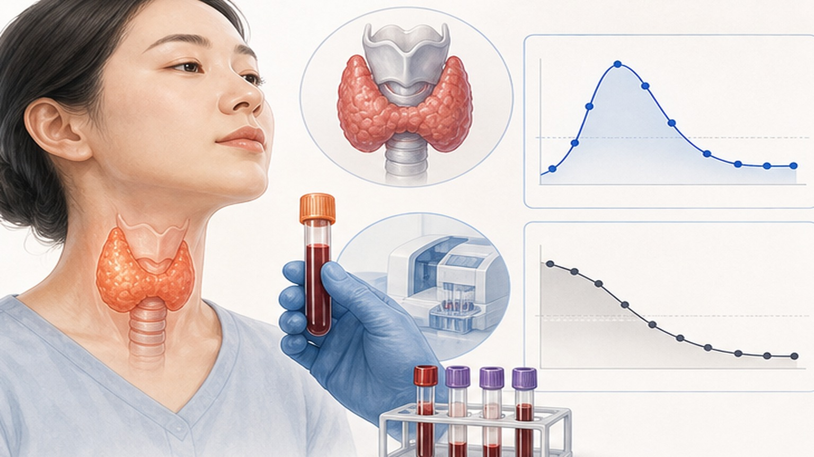
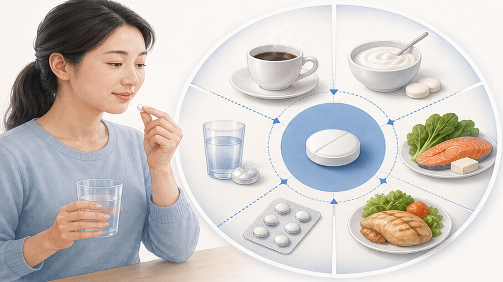
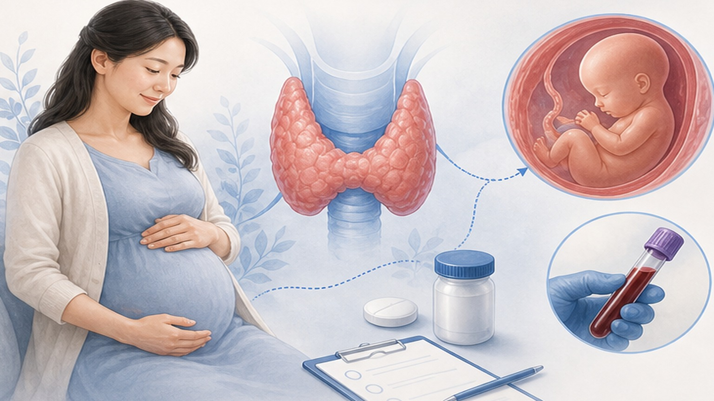

갑상선 호르몬이 부족해 몸의 대사가 느려지는 상태입니다
대부분 천천히 생겨 나이 탓·피로 탓으로 넘기기 쉽습니다
한국 정상 범위는 서구와 다르게 봅니다

부족한 호르몬을 채우는 표준 치료입니다 — 국내외 주요 지침 모두 첫 치료로 권합니다
같이 먹으면 약이 덜 흡수돼 호르몬 수치가 다시 떨어질 수 있습니다
| 무엇 | 간격 | 왜 · 어떻게 |
|---|---|---|
| 칼슘·철분제 | 4시간 | 약과 달라붙어 흡수가 20~25% 줄어듭니다. 임신 중 영양제도 4~5시간 띄웁니다 |
| 커피 | 1시간 | 약을 먹고 충분히 기다린 뒤 마십니다 |
| 위산 억제제 | 시간 분리 | 시작하거나 끊으면 6주 뒤 TSH를 다시 봅니다. 약 제조사가 바뀔 때도 같습니다 |
| 제산제·콜레스티라민 | 4시간 | 장 안에서 약과 결합해 흡수를 막습니다 |

약이 몸에 자리 잡는 데 약 5주(35일)가 걸려서, 바꾼 뒤 바로 재지 않습니다
모두 약을 먹는 것은 아닙니다 — 대한갑상선학회 2023 기준
엄마의 갑상선 호르몬은 아기 발달에 중요합니다

한국인은 요오드를 권장량의 2~5배 먹고 있어 따로 줄일 필요가 없습니다
| 구분 | 내용 |
|---|---|
| 괜찮습니다 | 김·미역·다시마 같은 해조류 · 산후 미역국 · 익힌 브로콜리·양배추 · 평소 양의 채소·과일 |
| 괜찮습니다 | 골고루 먹는 식사 · 약을 꾸준히 먹고 정기적으로 TSH 확인 |
| 주의하세요 | 다시마 농축액을 많이 먹는 것(특히 하시모토 갑상선염) · 요오드 영양제(한국 식단에는 필요 없음) |
| 주의하세요 | 셀레늄 영양제(공식 권고 없음) · ‘천연 갑상선 추출물’을 스스로 먹는 것 |
| 하지 마세요 | 의사와 상의 없이 다른 갑상선 호르몬(T3)을 더하거나 약 용량을 스스로 바꾸는 것 |
호르몬을 채우면 잘 관리되는 병입니다 — 꾸준한 복약과 정기 검사가 핵심
QR을 스캔하면 같은 자료를 휴대폰에서 다시 열 수 있습니다